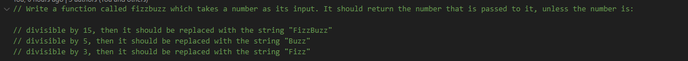
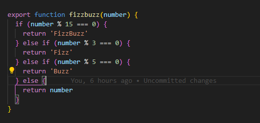

Technicle Blog Problem Solving
Have you ever played a game where you say certain words depending on a number you hear? The FizzBuzz challenge is like a fun coding game that involves numbers and special words!. Imagine you have a secret code with your friends. Instead of words, you use numbers. In this code, whenever a number is a multiple of 3, you say "Fizz." If the number is a multiple of 5, you say "Buzz." But it gets trickier! If a number is a multiple of both 3 and 5 (like 15, which is divisible by both 3 and 5), you need to say "FizzBuzz"!
Now this where i had most problems was translating this into a computer function. We create a function called "fizzbuzz" that takes a number as input. When you input a number into this function, it checks if the number meets any of these criteria (divisible by 3, 5, or 15), and returns a specific word accordingly. For instance, if you input 3 into the function, since it's divisible by 3, the function will return "Fizz". If you input 5, it returns "Buzz". If you input 15, it returns "FizzBuzz" because it's divisible by both 3 and 5. If you input a number that doesn't meet any of these conditions, like 7, the function will simply return 7, as it's not divisible by 3, 5, or 15.
Problem solving techniques
Googling
To solve this problem using Google, you would typically start by searching for information on how to write a function in a programming language. You might search for something like "how to write a function in JavaScript" if you're using JavaScript, for example. Once you understand how to write a function, you would then search for how to check if a number is divisible by another number.Next, you would search for how to combine multiple conditions in programming. This would help you figure out how to check if a number is divisible by both 3 and 5, or just by 3 or 5 individually. You might search for something like "how to combine conditions in an if statement in JavaScript".
Asking your peers

Your peer would start by explaining the problem to you in simple terms. They would make sure i understood what FizzBuzz means and what the function needs to do. Together, we would break down the problem into smaller, more manageable parts. My peer suggest starting with figuring out how to check if a number is divisible by 3, then move on to checking for divisibility by 5, and finally, checking for divisibility by both 3 and 5. As i start writing code to solve the problem, my peer would encourage me to experiment and try different approaches. He would suggest running your code with different inputs to see how it behaves and help me understand why certain things work while others don't.Above all, my peer would provide encouragement and support, reassuring you that it's okay to make mistakes and that learning to code is a gradual process.
A time stuggle to seek help
when i was at a young age In the wild maze of algebra, I was totally lost, too scared to speak up during class. As the big test approached, I knew I was in trouble. But instead of giving up, I promised myself I'd start asking for help when I needed it. So, I swallowed my pride and talked to my teacher, who turned out to be super understanding and helpful. With their support and some study group fun, I started to get it. Algebra didn't seem so scary anymore. It was all about taking it step by step, asking questions, and never giving up.